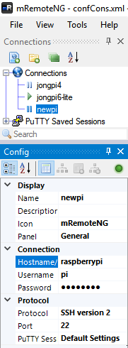

You will often want to execute commands over SSH instead of having to Remote Desktop or access your Pi via a monitor and keyboard.
Here’s how to get SSH setup on your Pi.
Enable SSH
Via Pi Terminal
sudo nano /boot/ssh
Hit CTRL+O to Save, Hit Enter, Hit CTRL+X to exit.
sudo reboot
Via Boot Disk
1. Insert SD card with Raspbian onto your host machine (laptop, desktop)
2. Create an empty file without an extension called `ssh`` in the root of your boot drive.
You can do that manually with Windows Explorer or you can open a command prompt and execute the following:
Navigate to Boot Drive Root
Windows
cd into the SD card drive letter, i.e. g:
Linux
cd /Volumes/boot
Create SSH file
touch ssh
- Insert SD Card into Raspberry Pi and boot it. SSH will be enabled.
Via UI
- On your Pi, go to Preferences -> Raspberry Pi Configuration
- Click ‘Interfaces’ and Enable SSH, Click OK
Create SSH Connection
You have a bunch of different options for connecting to your Pi over SSH. I’ve used Putty for a while, but have switched to mRemoteNG because it helps me manage many SSH windows and different device configurations in a tabbed environment.
In the examples below, replace ‘pi’ with your username if you changed it and replace ‘raspberrypi’ with your hostname if you change it - or just use your Pi’s ip address which you can find by executing
ifconfig. If you cannot find your Pi by hostname, then you’ll need to follow these steps to configure Samba so your hostname appears on your network.
mRemoteNG
I mention Putty below, but it wasn’t scaling for me as I had to go about managing multiple SSH windows to multiple devices. I found mRemoteNG, an app that lets you easily manage SSH sessions on your development machine, and I’m really liking it so far.
You can install mRemoteNG here.
Create SSH Connection
- Click New Connection, select SSH version 2, enter your hostname (or ip), username, password and then double click to open the connection.

You will now be connected to your Pi vs SSH:
Putty
Putty is decent, but like I mentioned above it doesn’t scale well when you need to manage multiple devices.
You can install Putty here.
Create SSH Connection
Open a command prompt and execute the following:
putty.exe -ssh pi@raspberrypi
You will now be connected to your Pi over SSH.